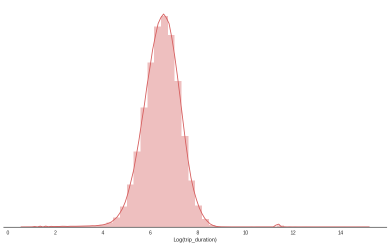
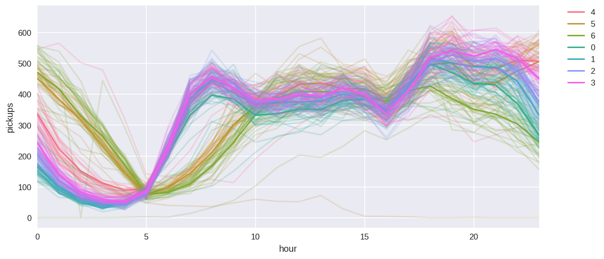
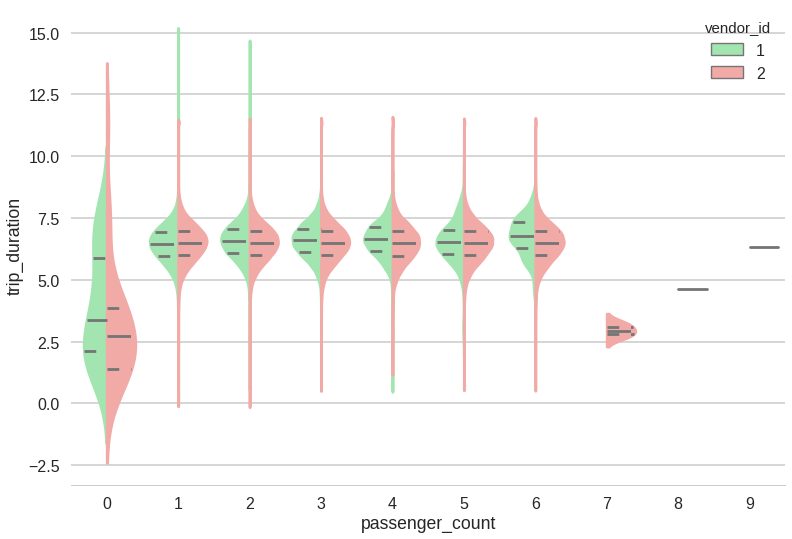
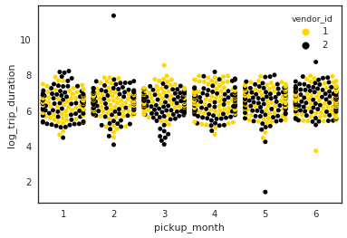
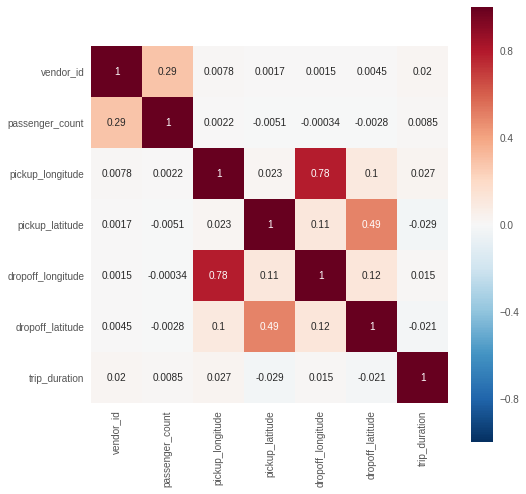

该部分不是一个特定功能的探索性数据分析，而是一个为了更好地理解数据而做的图的集合。我们需要理解数据中所有的字段。
查看行驶时长分布。

我们对基本的乘客数目、接单量、时间进行可视化。

接下来是对乘客数量可视化、供应商类型、时间的可视化。可以看到两个供应商的分布情况相似，但供应商一的旅客数量比供应商2和3的出行次数要多，乘客人数为7、8和9的出行次数非常少。

接下来的该图展示了这六个月vendor1与vendor2的接送客的时间

通过相关系数热力图，我们可以看出相关系数最大的是起止经度。这比上升纬度和下降纬度之间的0.49要高，因为曼哈顿在南北方向被拉长。这意味着纬度范围变化较大，经度变化较小。这为我们的预测系统提供更多的帮助

通过对数据的可视化与初步分析，我们对数据有了初步的认识，对他们之间的关系有了更多的了解。